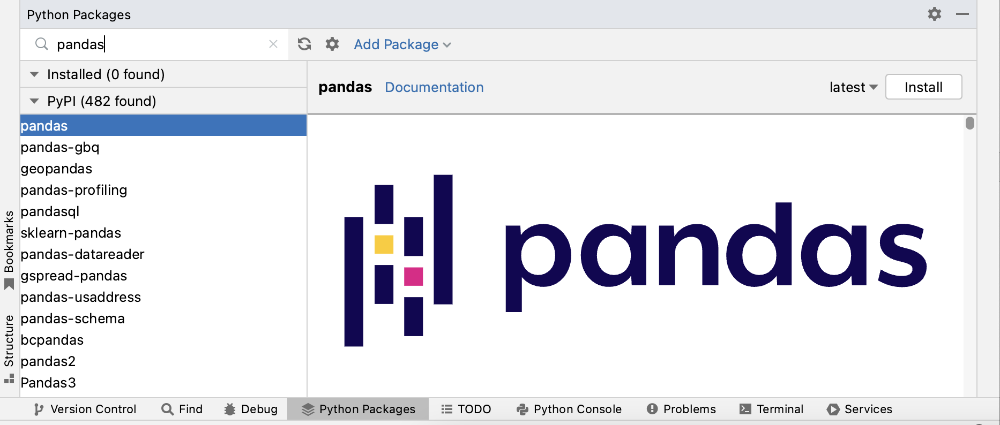

Pandas
Contents
3.1. Pandas#
3.1.1. What is Pandas?#
Pandas is a Python package designed for data manipulation and analysis. Its name is derived from “panel data” (not the bear!) and is also from “Python data analysis” [^ McKinney]. It is especially popular for its data structures that help process tabular data in a fast and efficient way.
3.1.2. Importing Pandas#
You can check whether Pandas is installed from the Python Packages tab in PyCharm. If it is not, you would see an install button on the right hand side of the Python Packages pane when you search for Pandas. Click on the install button if Pandas is not installed on your machine. 
To be able to work with Pandas we need to import the Pandas package into our Python code. Below is the community agreed convention:
import pandas as pd
3.1.3. The dataset#
For this session we will be using data from the World Bank Data Catalog 1 from the World Development Indicators (WDI) collection which was transformed by Alexia Cardona for the purpose of teaching data manipulation and visualisation programming. This data is compiled using official international resources.
Download the dataset from here and save it into a data folder in your PyCharm project.
This dataset contains official data for each country worldwide and contains indicators on life expectancy, population, and CO2 emissions. Below is the metadata of the dataset:
Column name |
Description |
|---|---|
|
Name of country. |
|
Year data is representative of. |
|
Life expectancy at birth, female (years). Life expectancy at birth indicates the number of years a newborn infant would live if prevailing patterns of mortality at the time of its birth were to stay the same throughout its life. |
|
Life expectancy at birth, male (years). |
|
Life expectancy at birth, total (years). |
|
Land area (sq. km). |
|
Male population count. |
|
Female population count. |
|
Total population count. |
3.1.4. Reading tabular data from a file#
Now that we have everything in place, let us start by first reading our data into our Python code. Pandas has conventient functions that load files containing tabular data.
df = pd.read_csv("data/world-bank-1_data.csv")
The code above reads the file world-bank-1_data.csv into a DataFrame object and creates variable df that points to it.
There are other functions in Pandas that read other file formats. You can see a list of these here.
If we run the code above in the Python Console in PyCharm we can see all this information in the Variables pane (see Fig. 3.1).
Fig. 3.1 df in the Variables pane in PyCharm.#
If we click on the View as DataFrame link, we can actually see the value of the data that is inside df.
Fig. 3.2 Data view of df in PyCharm.#
This is the easiest way to check the data. Checking the data through the df attributes in the Variables pane is not user-friendly
for DataFrame objects due to the complexity of it.
3.1.5. The DataFrame#
The popularity of Pandas mainly lies with its data structure; the DataFrame. The DataFrame data structure is suitable for
data that is in tabular form (2-dimensional); data with columns and rows. Since most of the data comes into this form, it makes the DataFrame data structure
and Pandas widely used.
Now that we have loaded the DataFrame in Python, we need to check if the data has loaded properly. We already saw how we can check this visually via PyCharm. Let us try to check this in the Console, by printing the first 5 rows of the DataFrame:
df.head(5)
country year population_m population_f population_t \
0 Afghanistan 2000 10689508.0 10090449.0 20779957.0
1 Afghanistan 2001 11117754.0 10489238.0 21606992.0
2 Afghanistan 2002 11642106.0 10958668.0 22600774.0
3 Afghanistan 2003 12214634.0 11466237.0 23680871.0
4 Afghanistan 2004 12763726.0 11962963.0 24726689.0
population_density land_area life_expectancy_f life_expectancy_m \
0 31.859861 652230.0 57.120 54.663
1 33.127872 652230.0 57.596 55.119
2 34.651540 652230.0 58.080 55.583
3 36.307546 652230.0 58.578 56.056
4 37.910996 652230.0 59.093 56.542
life_expectancy_t co2_emissions_pc
0 55.841 0.036574
1 56.308 0.033785
2 56.784 0.045574
3 57.271 0.051518
4 57.772 0.041655
You can also get summary statistics for each column of the df DataFrame:
df.describe()
year population_m population_f population_t \
count 3038.000000 2.708000e+03 2.708000e+03 3.030000e+03
mean 2010.500000 1.810384e+07 1.781787e+07 3.211690e+07
std 7.229606 6.969846e+07 6.568821e+07 1.284477e+08
min 2000.000000 3.571000e+04 4.029700e+04 9.392000e+03
25% 2003.000000 9.764312e+05 9.934100e+05 6.599435e+05
50% 2013.500000 3.641720e+06 3.747408e+06 5.644552e+06
75% 2017.000000 1.234708e+07 1.228930e+07 1.980094e+07
max 2020.000000 7.237710e+08 6.873290e+08 1.411100e+09
population_density land_area life_expectancy_f life_expectancy_m \
count 2968.000000 2.998000e+03 2800.000000 2800.000000
mean 410.489783 6.063802e+05 72.870253 67.979873
std 1894.724659 1.755858e+06 9.485278 8.831021
min 0.136492 2.027000e+00 40.005000 38.861000
25% 32.530300 1.014750e+04 67.318000 62.900000
50% 83.018459 9.428000e+04 75.450000 69.591000
75% 207.487240 4.512200e+05 79.900000 74.555250
max 21388.600000 1.638139e+07 88.100000 82.900000
life_expectancy_t co2_emissions_pc
count 2800.000000 2481.000000
mean 70.379877 4.294507
std 9.085448 5.431735
min 39.441000 0.020367
25% 65.076000 0.651679
50% 72.409000 2.463436
75% 77.124707 6.080600
max 85.387805 50.954034
And also the dtype of each column together with the number of non-null values for each column.
df.info()
<class 'pandas.core.frame.DataFrame'>
RangeIndex: 3038 entries, 0 to 3037
Data columns (total 11 columns):
# Column Non-Null Count Dtype
--- ------ -------------- -----
0 country 3038 non-null object
1 year 3038 non-null int64
2 population_m 2708 non-null float64
3 population_f 2708 non-null float64
4 population_t 3030 non-null float64
5 population_density 2968 non-null float64
6 land_area 2998 non-null float64
7 life_expectancy_f 2800 non-null float64
8 life_expectancy_m 2800 non-null float64
9 life_expectancy_t 2800 non-null float64
10 co2_emissions_pc 2481 non-null float64
dtypes: float64(9), int64(1), object(1)
memory usage: 261.2+ KB
None
3.1.6. The Series#
Each column in a DataFrame is a Series.
3.1.7. Slicing Data Frames#
3.2. extract columns - label-based indexing#
Selecting a column from the DataFrame object: df[“column_name”] > Series type(df[“life_expactancy_T”]) #get length of Series life_expectancy.size size is an attribute not a function - no parentheses
get mutiple columns - takes as an input a standard Python list df[[“column1”, “column2”,]] returns a dataframe
3.3. extract rows - boolean indexing#
df[conditional expression] le_top = df[df[“life_expectancy_T”] > 80]
3.4. extracting rows and columns - loc/iloc operators#
df[R, C]
loc is mainly used with label-based indexing and boolean indexing
3.5. integer-based indexing#
iloc is mainly used with index positions If you want to use index positions of data, then use iloc get the first 10 rows and the first 5 columns le_top.iloc[0:10, 0:5]
3.6. Modifying the DataFrame#
3.6.1. create a new column#
3.6.2. changing values of existing data#
using the loc/iloc operators le_top.iloc[0:10, 0] = “ABC” df.loc[df[“life_expectancy_t”] > 84, “country”] =”XYZ”
exercise:
modify a value
check if the original dataset was modified as well. - it should not